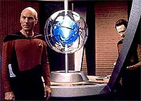
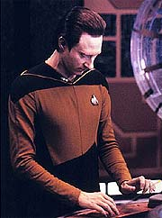
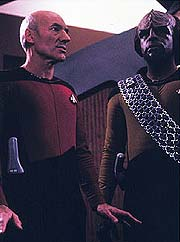
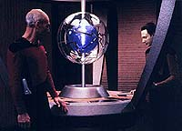
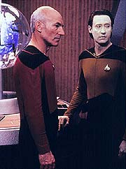

|
MANCHETE
DO EPISDIO
Romulanos
e Iconianos alimentam
paixo arqueolgica de Picard
Episdio
anterior | Prximo
episdio
Sinopse:
Data Estelar: 42609.1.
A Enterprise entra na Zona Neutra Romulana em resposta a um pedido
de socorro vindo da USS Yamato, que est sendo afetada por uma srie
de defeitos inexplicveis. A nave estava naquela regio procurando
o planeta natal dos Iconianos, uma civilizao atualmente extinta
que possua tecnologia inimaginvel pelos padres contemporneos.
 Quando
o capito da Yamato tenta explicar sua misso a Picard, a
transmisso cortada e a nave danificada repentinamente explode.
Logo em seguida, uma nave Romulana se descamufla e ordena que Picard
deixe a Zona Neutra. O capito diz que s ir partir quando
concluir sua investigao do que aconteceu com a Yamato.
Picard descobre, a partir dos dirios do capito Donald Varley,
que a Yamato chegou de fato a Icnia e que uma sonda misteriosa foi
lanada da superfcie na direo da nave.
Em curso para Icnia, para investigar o que teria acontecido com a
Yamato l, a Enterprise comea a sofrer os mesmos defeitos que
atingiam a outra nave da Federao antes de sua destruio.
Geordi informa Picard de que a sonda rescreveu os programas do
computador da Yamato, levando destruio, e que o computador da
Enterprise foi contaminado quando carregou os dirios da Yamato,
antes da exploso.
Em um esforo para salvar a Enterprise antes que seja tarde demais,
Picard e um grupo avanado descem para a superfcie de Icnia. Ao
mesmo tempo, a nave Romulana volta a aparecer, exigindo a retirada
imediata da nave. Os Romulanos ameaam disparar torpedos fotnicos,
e a Enterprise, com problemas, no consegue erguer seus escudos.
Felizmente, os aliengenas tambm esto com problemas,
provavelmente tambm infectados por uma sonda Iconiana. Quando
Riker finalmente consegue erguer os escudos, ele ordena que eles
permaneam assim, para repelir qualquer ataque futuro dos Romulanos.
Com a medida, o grupo avanado fica impedido de retornar
Enterprise.
Em Icnia, o grupo avanado descobre um portal capaz de permitir
viagens instantneas por longas distncias. Quando a fonte de
energia do portal tenta executar o mesmo procedimento que afetou as
naves com Data, preciso lev-lo imediatamente de volta. Worf o
transporta para a Enterprise pelo portal, mas parece que o andride
est "morto". Geordi diz que no pode fazer nada por
ele, quando subitamente Data se recupera, graas a seus sistemas de
diagnstico e soluo de problemas automticos. Graas
experincia de Data, Geordi descobre que para salvar a Enterprise
dar fazer um "reset" em todos os sistemas. O
procedimento bem-sucedido.
 Enquanto
isso, Picard est providenciando para que a tecnologia Iconiana
seja destruda e no caia nas mos dos Romulanos. Ele consegue
iniciar uma falha nos sistemas que cause uma exploso, e foge na ltima
hora pelo portal, indo parar na nave Romulana. Os Romulanos dizem
que Picard morrer com eles, por conta do mecanismo de auto-destruio
que se ativou sozinho e que eles no conseguem desativar. Antes que
Picard possa responder, ele transportado a bordo da Enterprise.
Em um gesto de boa-f, antes de abandonar a regio, o capito da
Enterprise fornece aos Romulanos a informao de como corrigir
seus sistemas e tornar sua nave novamente operacional. Com isso,
ambos partem para seus respectivos lados alm da Zona Neutra.
Comentrios:
Uma histria bem
trabalhada e um conjunto interessante de variveis (que inclui,
entre outras coisas, os queridos Romulanos) tornam "Contagion"
um interessante episdio desta segunda temporada. O episdio ainda
predominantemente orientado a enredo, mas j oferece insights
interessantes para alguns dos personagens.
 O
principal beneficiado Picard. Descobrimos, por exemplo, sua paixo
confessa pela arqueologia. Esse elemento no s casa muito bem com
o que j sabamos da personalidade do capito, como ir
propiciar vrias situaes interessantes para o personagem no
futuro.
Aqui, por exemplo, d ao capito a chance de assumir a ao da
histria, conduzindo o grupo avanado. Embora Picard e Riker sejam
uma dupla imbatvel quando o primeiro est na ponte e o segundo no
grupo avanado, uma mudana de ares s vezes cai bem, e
certamente traz uma perspectiva diferenciada para o capito.
Alm de um fim em si mesmo, o interesse arqueolgico de Picard
serve para nos introduzir aos Iconianos, o principal elemento em
torno do qual o episdio gira. Embora seja apenas um mecanismo para
impulsionar a histria, temos a chance de aprender bastante sobre
eles, adicionando texturas interessantes ao episdio. Alis, o
estudo dos Iconianos muito mais intrigante e atraente do que os
efeitos que os aliengenas h tempos mortos proporcionam para
conduzir a histria, com o j totalmente clich esquema
"falhas macias de sistema ameaam a Enterprise". Ele s
no pior do que das outras vezes porque nesta ao menos vimos
outra nave exatamente igual Enterprise, a Yamato, sofrer os terrveis
efeitos da sondagem Iconiana.
 Os
Romulanos tambm aparecem de forma perifrica batida premissa,
mas adicionam bastante tenso e s prprias motivaes que
geram o drama do episdio. No faz sentido arriscar a violao
da Zona Neutra por uma mera expedio arqueolgica, mas isso muda
totalmente se estiver em jogo a posse de tecnologia poderosssima
que seria capaz de dar uma vantagem ao Imprio Romulano.
Algumas sequncias, como Picard se materializando e
desmaterializando da nave Romulana, so memorveis. Outras, como o
outro grande clich do episdio, "a morte de Data", so
literalmente de matar. Toda vez que o andride tratado como um
humano me incomoda. A nica forma em que posso conceber a morte de
Data a pulverizao do andride ou a "perda total"
de seus sistemas. Os danos no pareciam to graves assim, e o fato
de Geordi fechar os olhos dele parece ainda mais pattico e
condescendente com essa "humanizao" do andride.
Antes de declarar a morte de Data, no seria bom abrir a cabea
dele e mexer em alguns circuitos?
Riker, na cadeira de capito, tem a chance de brilhar um pouco mais
do que de costume. Worf, para compensar, apesar de estar no grupo
avanado, apenas demonstra o mesmo intelecto limitado de costume. O
personagem ainda ter muito a progredir, ainda nesta temporada, mas
aqui permanece o mesmo paspalho dos primeiros episdios.
 Tecnicamente,
o episdio muito bom. Os efeitos especiais que envolvem as
sondas Iconianas e a nave Romulana so bons destaques. J a
cenografia da instalao Iconiana pobre demais para demonstrar
o quo impressionantes deviam ser aqueles aliengenas --quase to
pobre quanto a pintura que representou uma tomada distante da
instalao.
No final das contas, "Contagion" um episdio
que vale a pena ver e rever. A combinao dos vrios elementos
feita de forma bem-sucedida, apesar dos clichs e da
improbabilidade de trabalhar bem tantas coisas de uma vez s. Um
ponto a mais para a turma da Nova Gerao.
Citaes:
Riker "Fate...
protects fools, little children, and ships named Enterprise."
("Destino... protege tolos, criancinhas e naves chamadas
Enterprise.")
Picard - "The victors invariably write the history to their
own advantage."
("Os vencedores invariavelmente escrevem a histria em seu
favor.")
Picard - "Well, Number One. I can see why you want to keep
the away-missions to yourself. That's where the excitement is. So
what's been happening here? Same old routine, I suppose."
("Bem, imediato. Posso ver por que voc quer manter as misses
avanadas para voc. onde est a empolgao. Ento, o que
tem acontecido por aqui? A mesma rotina de sempre, suponho.")
Trivia:
 A histria deste episdio foi concebida por Beth Woods, f de Jornada
e tcnica em informtica. Beth trabalhava nos computadores dos
escritrios dos produtores da Nova Gerao.
A histria deste episdio foi concebida por Beth Woods, f de Jornada
e tcnica em informtica. Beth trabalhava nos computadores dos
escritrios dos produtores da Nova Gerao.
Neste episdio tomamos conhecimento pela primeira vez que Picard
tem um enorme interesse por arqueologia. Esse interesse seria
explorada nos episdios Captains Holiday, Qpid,
The Chase, Gambit
e Bloodlines.
Carolyn Seymour, que aqui interpreta a subcomandante Taris voltar
como um aliengena em First Contact,
episdio do quarto ano, e como uma Romulana em Face
of the Enemy, episdio do sexto ano da srie.
Pela primeira vez na histria do franchise de Jornada uma
nave Romulana tem um nome: Haakona.
E pela primeira vez ouvimos Picard pedir seu ch oralmente ao
replicador de alimentos. Ch, Earl Grey, quente.
Ficha
tcnica:
Escrito por Steve Gerber e Beth
Woods
Direo de Joseph L. Scanlan
Exibido em 27/02/1989
Produo: 037
Elenco:
Patrick Stewart como
Jean-Luc Picard
Jonathan Frakes como William Thomas Riker
Brent Spiner como Data
LeVar Burton como Geordi La Forge
Michael Dorn como Worf
Marina Sirtis como Deanna Troi
Wil Wheaton como Wesley Crusher
Elenco convidado:
Diana Muldaur como
Katherine "Kate" Pulaski
Thalmus Rasulala como capito Donald Varley
Carolyn Seymour como subcomandante Taris
Episdio
anterior | Prximo episdio
|